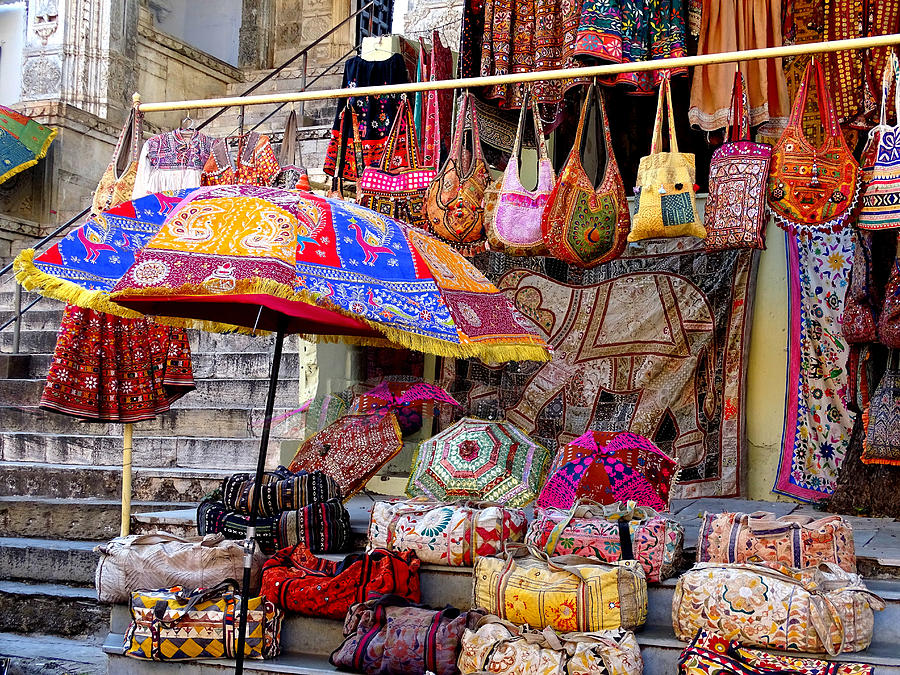
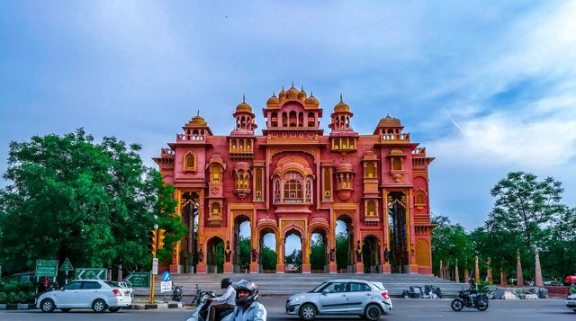
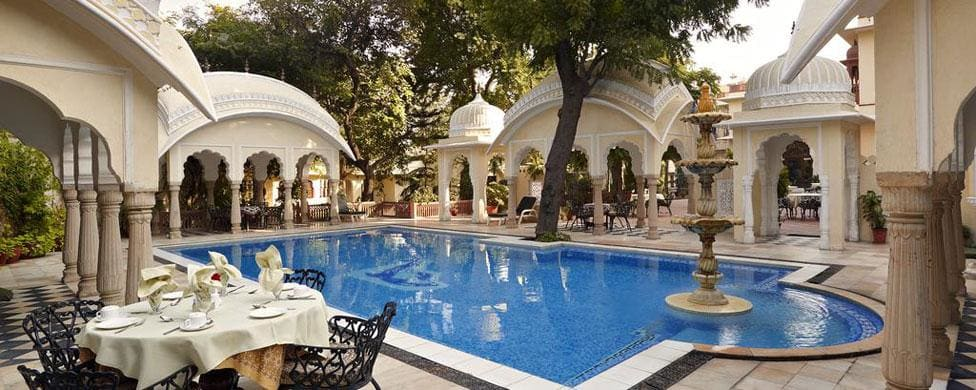
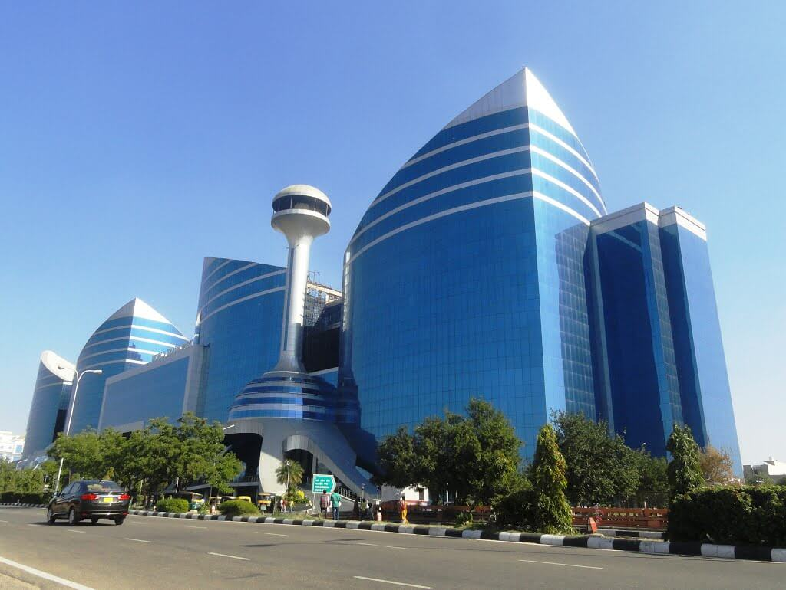
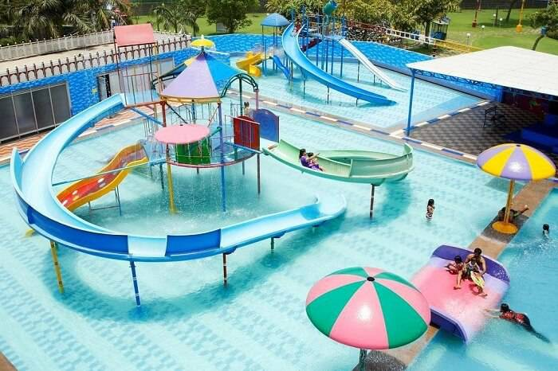
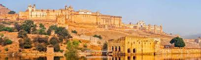
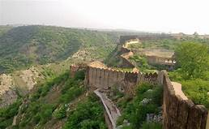

Jaipur: The Ancient 'Pink City' of
Rajasthan

| 
|  |  |  |  | 
|  |
|---|
The first planned city of India, Jaipur has a rich history of a clan of rulers who lived in magnificent forts and palaces. But, that’s not
only what the capital of Rajasthan is famous for. The entire city of Jaipur is painted in the colour pink and there’s a really interesting story
behind this. Here’s all you need to know about the ‘Pink Paint Culture’ of one of the most hospitable cities on the planet.For further details click here
- Area :- 467km^2
- Population :- 30.7 lakhs (2011)
- Religion :-
Jaipur is an Indian city, and therefore the primary religion is Hindu. Not surprisingly, there are many Hindu influences in the city that 89% of its inhabitants claim as their chosen religion. Other religions represented in Jaipur are Islam, which is practiced by 7% of the population, while Christianity, Jainism, Sikh, and Buddhism make up the remaining 4% of the population. - Language :-
The city of Jaipur is in the state of Rajasthan, so Rajasthani is the most widely-spoken language. Other languages spoken within the city include English, Marwari, and Hindi. - Climate :-
For most, the best time to visit Jaipur is during the winter months between October and March due to the milder climate. The other two seasons experienced in Jaipur are summer and monsoon season. Summer is between March and June and, during these hot months, the temperature climbs to a high of 45 C and a low of a 25 C.
Tourist places to visit in Jaipur
| Sr.No. | Name | Photo | Location | Timings | Price |
|---|---|---|---|---|---|
| 1 | Amber Fort and Palace |  | Devisinghpura, Amer, Jaipur, Rajasthan 302001 | 8:00 a.m. to 5:30 p.m. | For Indians: 25Rs. (Inclusive of Entry & Camera ) Foreign Nationals: 150 Rs. (Inclusive of Entry & Camera) |
| 2 | Nahargarh Fort |  | Krishna Nagar, Brahampuri, Jaipur, Rajasthan 302002 | 9:30 a.m. to 5:30 p.m. | For Indians: 10Rs (Adults) For Foreign Nationals: 50 Rs (Adults) |
| 3 | Hawa Mahal, Palace of the Winds | 
| Hawa Mahal Rd, Badi Choupad, J.D.A. Market, Pink City, Jaipur, Rajasthan 302002 | 9:00 a.m. to 4:30 p.m. | For Indians: 10 Rs.
For Foreign Nationals: 50 Rs Entry is Free on Monday and Closed on Friday |
| 4 | Jal Mahal |
| Amer Rd, Jal Mahal, Amer, Jaipur, Rajasthan 302002 | 6:00 a.m. - 6:00 p.m. | Free |
| 5 | Jaigarh Fort | 
| Devisinghpura, Amer, Rajasthan 302028 | 9:00 a.m. to 4:30 p.m. | For Indians: 25 Rs (Adults) For Foreign Nationals: 75 Rs (Adults) |